← Home · Client setup · What’s new
ios-agent-mcp 2.10.0 · available on npm
Build an iOS app
from one sentence.
Describe the app. The /ios-build agent plans it, writes the SwiftUI code, builds it, fixes the errors and screenshots every screen in the iOS Simulator.
/ios-build "A habit tracker with a list, a detail screen, and settings with dark mode toggle"The app’s code is yours. Credentials go in a gitignored .env, never in source.
What it does
- Preflight. Checks Node, Xcode, the Simulator SDK and a simulator, and tells you how to install anything missing. XcodeGen is optional.
- Plan. Picks screens, data and capabilities, then writes PLAN.md: what will be built, which accounts and keys you need, and what it costs.
- Project. Creates the Xcode project and applies capability modules: sign-in, payments, maps, charts, widgets and more.
- Code. Writes the whole app in SwiftUI with Swift 6 concurrency, loading, empty and error states, Dynamic Type and dark mode.
- Build and fix. Builds, reads each compiler error with its file and line, and fixes it. Each cycle is capped at 8 attempts and 25 minutes, counted from its first build.
- Run and screenshot. Launches the app in the Simulator, opens each top-level screen and screenshots it.
- Report. Writes RUN_REPORT.md with the builds, the screenshots and what still needs your accounts or money.
Then change it in plain words: /ios-build --refine "Add a streak badge to each habit". A refinement gets its own build budget. A stopped run continues with --resume.
Next update · GitHub review · not yet on npm
Build, test, then look at the app.
The shared build engine adds generated unit and screen tests, design choices, source-matched visual refinements, and iPad captures. Studio can use this same workflow through its shared-agent starting point.
Firebase, Google Sign-In, Stripe and animation modules include configuration guidance. Compilation, provider setup, test execution and visual observations are reported separately. See the implementation notes and limits.
Apps it made
Four requests, run on October 2, 2026. The agent planned each app and wrote all the code. The projects were then opened in Xcode 27.0 and run on the iPhone 18 Pro Simulator. Each one built on the first try with no code changes. These are screenshots of those runs, not mockups.
Habit tracker
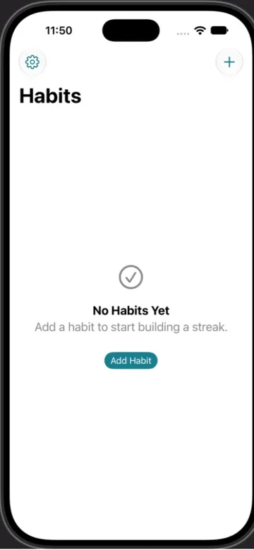
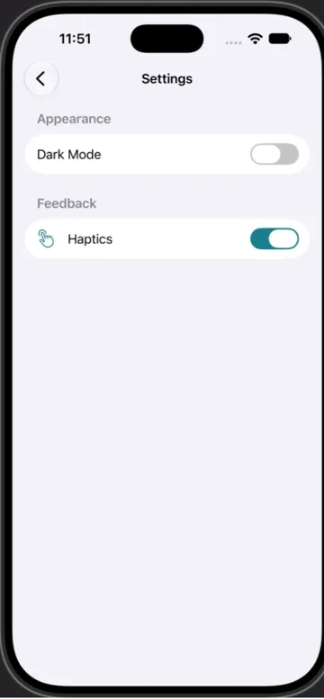
Notes with SwiftData and search
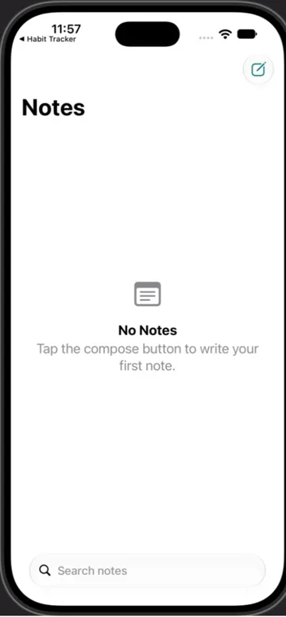
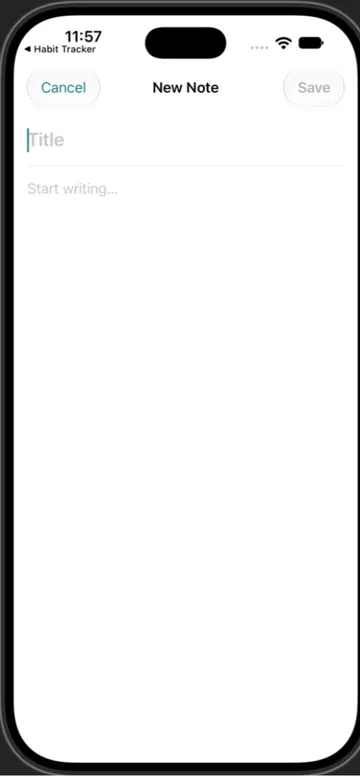
Three tabs: Home, Search, Profile
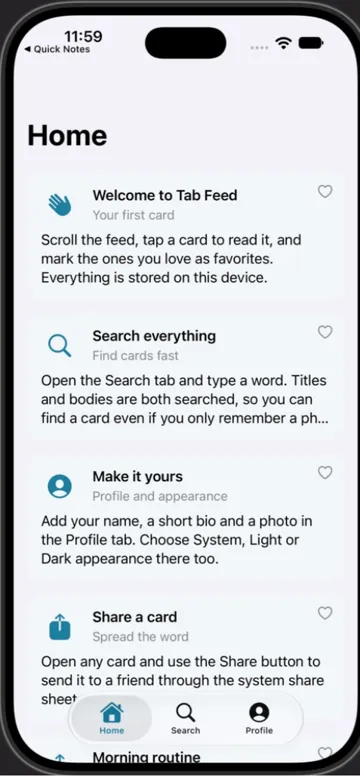
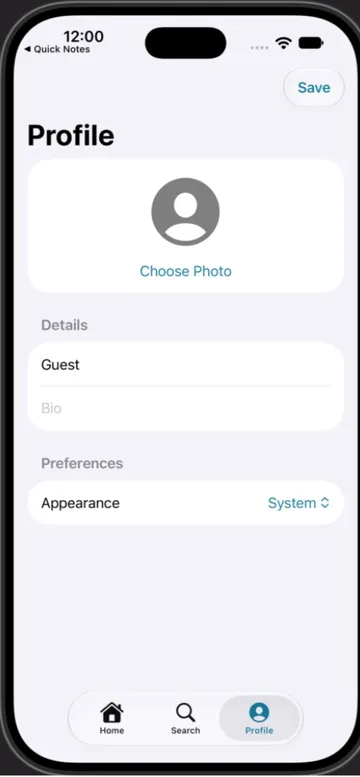
Food delivery, 20 capability modules
Sign in with Apple and email, a restaurant list with a map, a cart, a checkout and a Live Activity widget. The app and its widget extension built with no errors.
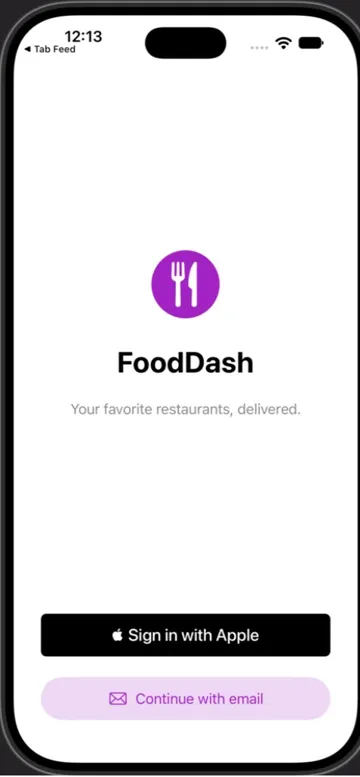
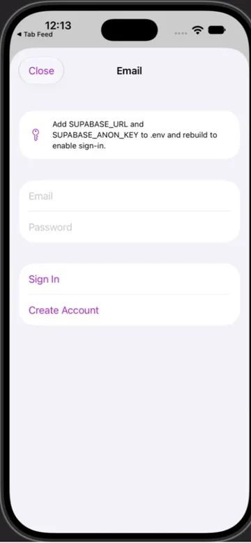
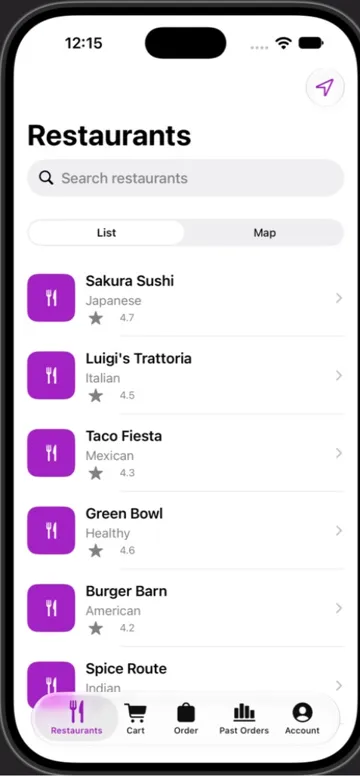
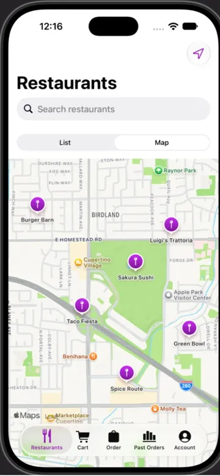
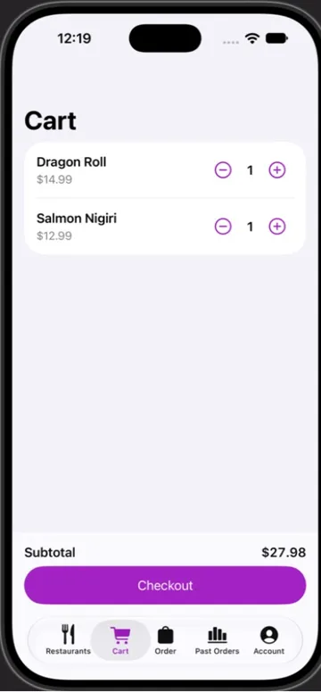
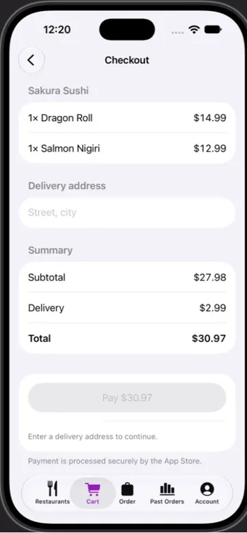
What has not been verified yet
- The agent’s own build-and-fix loop and its Simulator screenshots have not yet run end to end on a Mac. In the examples above, the plan and code came from the agent, and the build and screenshots were done by hand in Xcode.
- Typed input did not reach the Simulator during those runs, so adding a habit, saving a note and the StoreKit purchase were not exercised.
- Every capability module is marked
untesteduntil its own verify run passes. All 41 compile together in one app (Xcode 27.0, Swift 6). - Simulator only: no signing, device installs, TestFlight or App Store submission.
Capability modules
48 modules the agent can apply, from 162 capabilities it can plan for. 7 verified, 41 untested: a module is verified only after its own build check passes on a Mac. 41 compiled together in one app. Generated from the module manifests.
| Module | Category | Kind | You provide | Status | Compiled |
|---|---|---|---|---|---|
| RealityKit 3D view | 3d-ar | Apple, default | nothing | untested | yes |
| Accessibility baseline | accessibility | Apple, default | nothing | untested | yes |
| On-device AI (Foundation Models) | ai-ml | Apple, default | nothing | untested | yes |
| Local web animation | animation | Apple | nothing | verified | no |
| Lottie animation | animation | third-party | nothing | untested | yes |
| Rive animation | animation | third-party | nothing | verified | no |
| App icon (rendered from SVG layers, Icon Composer ready) | app-icon | Apple, default | nothing | untested | yes |
| Appearance setting (light, dark, system) | app-structure | Apple | nothing | untested | yes |
| Searchable lists | app-structure | Apple | nothing | untested | yes |
| Brand colors (asset catalog) | assets | Apple, default | nothing | untested | yes |
| SF Symbols | assets | Apple | nothing | untested | yes |
| Email and password sign-in (Supabase Auth REST) | authentication | third-party | SUPABASE_URL, SUPABASE_ANON_KEY | untested | yes |
| Face ID / Touch ID lock | authentication | Apple | nothing | untested | yes |
| Firebase authentication | authentication | third-party | nothing | verified | no |
| Google Sign-In | authentication | third-party | GOOGLE_CLIENT_ID, GOOGLE_REVERSED_CLIENT_ID | verified | no |
| Passkeys | authentication | Apple | ASSOCIATED_DOMAIN | untested | yes |
| Sign in with Apple | authentication | Apple, default | nothing | untested | yes |
| CloudKit database | backend | Apple, default | nothing | untested | yes |
| Firebase Firestore | backend | third-party | nothing | verified | no |
| Supabase database (supabase-swift) | backend | third-party | SUPABASE_URL, SUPABASE_ANON_KEY | untested | yes |
| Your REST API | backend | Apple | API_BASE_URL | untested | yes |
| Background app refresh | background | Apple, default | nothing | untested | yes |
| Swift Charts dashboard | charts | Apple, default | nothing | untested | yes |
| SwiftUI design system and components | design-system | Apple, default | nothing | verified | no |
| Haptic feedback | device-hardware | Apple, default | nothing | untested | yes |
| Launch screen and animated splash | launch-screen | Apple, default | nothing | untested | yes |
| String Catalog localization | localization | Apple, default | nothing | untested | yes |
| Location (when in use) | maps-location | Apple | nothing | untested | yes |
| MapKit map with places | maps-location | Apple, default | nothing | untested | yes |
| Camera photo capture | media-camera | Apple | nothing | untested | yes |
| Photo picker | media-camera | Apple, default | nothing | untested | yes |
| HTTP client (URLSession) | networking | Apple, default | nothing | untested | yes |
| Local notifications and reminders | notifications | Apple, default | nothing | untested | yes |
| Push notifications (APNs) | notifications | Apple | APNS_KEY_ID, APNS_TEAM_ID | untested | yes |
| Apple Pay checkout | payments | Apple | APPLE_PAY_MERCHANT_ID | untested | yes |
| RevenueCat subscriptions | payments | third-party | REVENUECAT_API_KEY | untested | yes |
| StoreKit 2 subscriptions and paywall | payments | Apple, default | nothing | untested | yes |
| Stripe PaymentSheet | payments | third-party | STRIPE_PUBLISHABLE_KEY | verified | no |
| SwiftData iCloud sync | persistence | Apple | nothing | untested | yes |
| SwiftData local persistence | persistence | Apple, default | nothing | untested | yes |
| Keychain storage | security | Apple, default | nothing | untested | yes |
| Privacy manifest | security | Apple | nothing | untested | yes |
| Deep links (URL scheme) | sharing-deep-links | Apple, default | nothing | untested | yes |
| Share sheet | sharing-deep-links | Apple | nothing | untested | yes |
| Siri and Shortcuts (App Intents) | sharing-deep-links | Apple | nothing | untested | yes |
| Universal links | sharing-deep-links | Apple | ASSOCIATED_DOMAIN | untested | yes |
| Home Screen widget | widgets | Apple, default | nothing | untested | yes |
| Live Activity | widgets | Apple | nothing | untested | yes |
Install
The build-agent tools are published in ios-agent-mcp 2.10.0 (npm verified October 3, 2026). You need a Mac with Node 20 or later, Xcode 16 or later and Claude Code.
claude mcp add ios-agent -- npx -y ios-agent-mcp@latest
npx -y ios-agent-mcp@latest install-command --globalThen run /ios-build "<your app>" in any Claude Code session. Full guide, tools and limits →
Want a starter you build yourself, or to drive an existing project until your own checks pass? Choose a workflow.